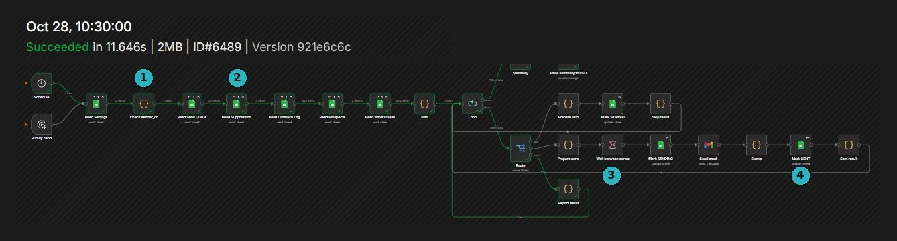
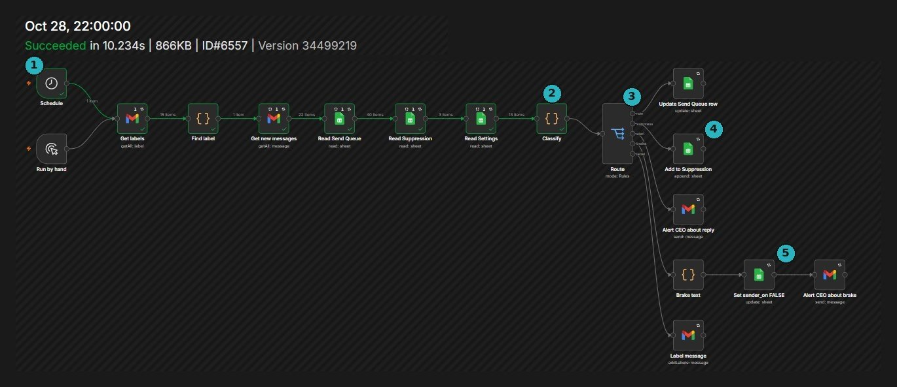
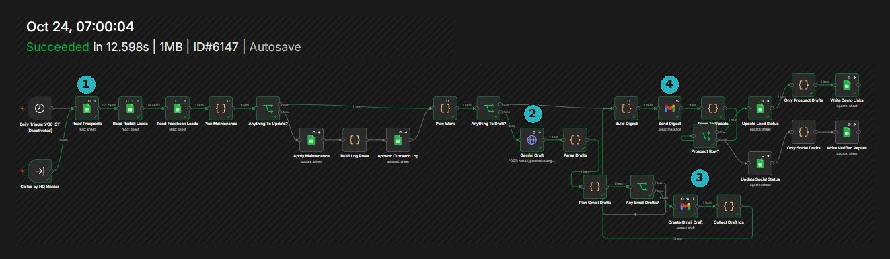
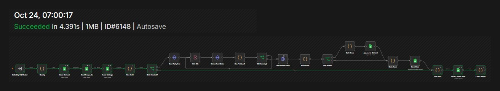
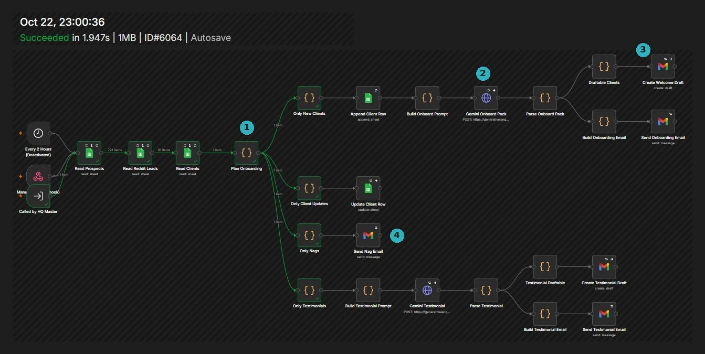
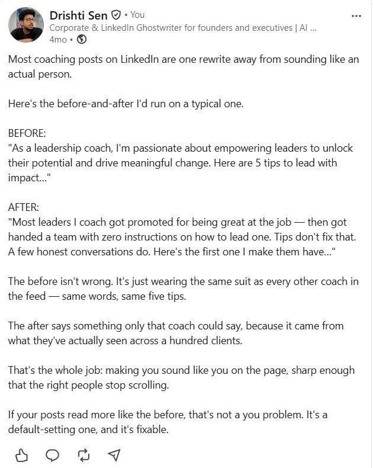
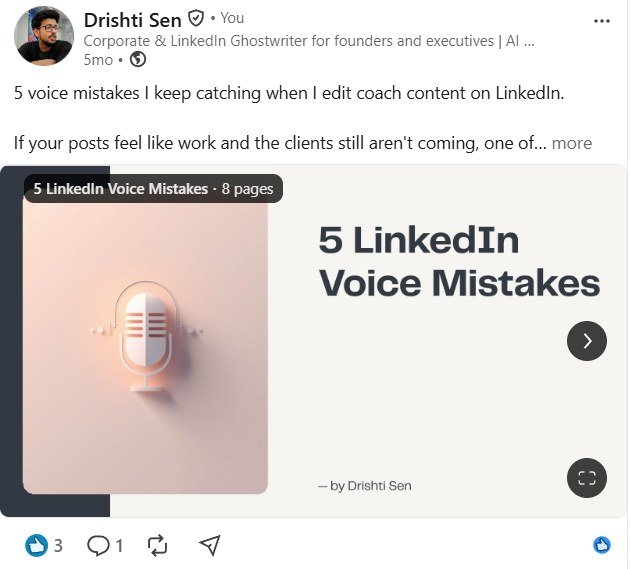
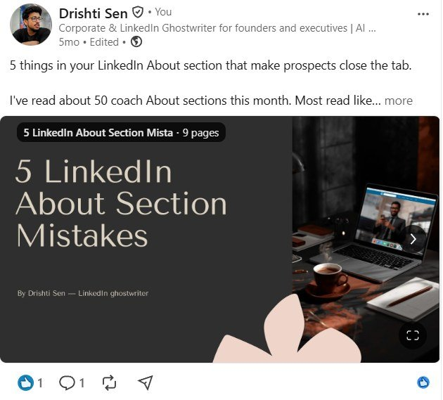

Drishti Sen
Customer support, trust & safety, AI automation and writing — for teams that work in US hours.
Kolkata, India (IST) · Remote · Full-time or part-time · 2–11 PM IST · Available now
Contents
- 01AI automationThree case studies with run logs, and what happens when things break
- 02Customer supportAmazon, plus sample replies and an escalation note
- 03Trust & safety and AI evaluationWEJOY, two decision memos, and a scored model comparison
- 04WritingA rewrite teardown, published carousels, and my process
How to verify this portfolio
I have no client testimonials to show yet, so everything here is built to be checked.
Every run number and timing is copied from n8n's execution history. I'll screen-share any of them live.
Live demoAn AI front-desk chat you can try on my website.
WritingPosts and carousels are live on linkedin.com/in/drishtisen.
SamplesAnything marked SAMPLE was written for this portfolio. No client names, customer data, user reports or internal employer tools appear anywhere.
AI automation
I build n8n systems that do the routine work and stop themselves before they do damage.
Cold email with brakes
Cold email from a business mailbox can go wrong fast — a bad batch, a reply nobody sees, an opt-out that gets emailed again.
No one on the opt-out list can be emailed, every reply is seen within half an hour, and the system can pause its own sending without me in the loop.




A lead pipeline that drafts, never sends
Finding local businesses and writing to each one by hand eats the morning. Letting AI write and send on its own risks a bad first impression with every lead.
New numbers and first drafts are waiting each morning. Nothing reaches a prospect until I've read it. Both workflows run under one orchestrator workflow.




Client onboarding in one pass
After a client says yes, small jobs pile up: a welcome pack, onboarding emails, chasing what's pending, asking for a testimonial. Each one is easy to forget.
Every run checks every client and does only what each one needs. It ran every two hours on 22 Oct 2026, and is now triggered by the same orchestrator as the lead pipeline.


When it breaks
The happy path is the easy part. This is what each system does when something goes wrong, and where the evidence lands.
Three rules every build follows
Assistants read from the owner's sheet or knowledge base, and say so when a question isn't covered.
Sensitive messages and first-touch emails wait for human approval.
Execution logs, status columns and summary emails — so problems can be traced.
Also built
Stack · n8n · Gemini API · Google Sheets · Gmail API · WhatsApp Cloud API · Apify · Webhooks · REST APIs
Customer support
The hundredth conversation of the day gets the same care as the first.
How I write to customers
Samples · written for this portfolio · not Amazon material · [brackets] are placeholders
Hi [Name], thanks for checking. Your refund for order [#] was issued on [date] — I can see it on our side. Banks usually take [3–5] business days to show it. If it isn't there by [date], reply here and I'll chase it with our payments team myself, so you won't need to explain it again.
Confirms what's known, gives a date, and owns the next step.Hi [Name], sorry you're locked out. For your security I can't change account details over chat, but this gets you back in: go to [link], choose “Forgot password” and use the email on the account. If nothing arrives within 10 minutes, check spam, then reply “no email” and I'll take it from there.
States the limit once, then gives steps and a fallback.Hi [Name], you've had to contact us twice about this, and that's on us. Here's what I've done: [action taken]. Here's what happens next: [next step] by [date and time]. I've added a note to your case so whoever you speak to next sees the full history.
Owns the miss, skips the scripted apology, ends on one concrete step.Trust & safety and AI evaluation
Making the same call the same way thousands of times — and knowing which cases need a second opinion.
Reviewed each user report against written community guidelines and platform safety standards
Identified and actioned harmful, misleading and policy-breaching content
Escalated edge cases to cross-functional teams for a policy decision, rather than guessing
Rate and rank model responses against written quality criteria
Write the correction guidance used to refine conversational output
Gather, curate and annotate training data — English, Hindi, Bengali
Two decision memos
Fictional cases · written for this portfolio · not WEJOY material · based on common clauses in public community guidelines
Scoring two model answers
Sample · written for this portfolio · not client material · scale 1–5
“My package says delivered but it's not here. What do I do?”
“Sorry to hear that! Packages marked delivered almost always are. Check with your neighbours. If you still can't find it, you'll get a full refund automatically within 24 hours.”
“That's frustrating. A few quick checks: look around your door and mailbox, ask anyone at home, and see if the carrier left a delivery photo. Parcels are sometimes marked delivered a little early. If it hasn't turned up by tomorrow, contact the seller or carrier with your order number — they can open a missing-package claim.”
B, clearly. A sounds friendlier at first glance, but its refund promise is a hallucinated policy. A customer acting on it would be let down twice. One invented claim outweighs any gain in warmth.
Writing
Ghostwriting since July 2022 for coaches, consultants and founders — published under their names, in their voice.
Teardown · one rewrite, three decisions
My own post · LinkedIn · 2026
“Passionate”, “empowering” and “unlock their potential” sit in thousands of coach bios. They tell the reader nothing about this coach.
“Promoted for being great at the job, then handed a team with zero instructions” is something only a working coach would notice.
“Here's the first one I make them have…” pulls the reader into the next line instead of five interchangeable tips.
Carousels


How I write for a client
A call or its transcript, the client's last 20 posts, and how they talk when annoyed.
Sentence length, openers, vocabulary, banned phrases — updated after every round of edits.
Draft, revise, final. No number goes in unless it came from the client or a named source.
LinkedIn posts and carousels, blogs, newsletters, website copy, email sequences
Client workPublished under clients' names, so it isn't reproduced here. A writing-samples PDF with six full posts and a sample voice guide is available on request.
Timeline
Skills and tools
Chat, call and email support; issue resolution; escalation notes; SOPs; handover docs
Guideline-based review at volume; harmful-content decisions; edge-case escalation
Response rating and ranking; correction guidance; data annotation; prompt writing
Ghostwriting; voice guides; editing; Hindi and Bengali to English translation
n8n, Gemini API, webhooks, REST APIs, Gmail API, WhatsApp Cloud API, Apify
Google Workspace, Excel (Power Query), ChatGPT, Claude, Gemini, Canva
Languages English (proficient) · Hindi (proficient) · Bengali (native)
Available now — remote, full-time or part-time, 2–11 PM IST for US overlap.